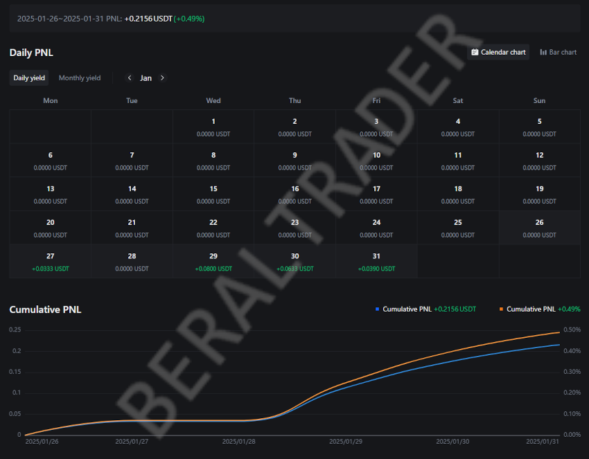

Jan
Este foi o resultado do mês. Comecei operando com pouca frequência e sem alavancagem, mas o saldo foi positivo. Realizei várias operações ao longo dos dias, ainda em fase de aprendizado no mercado de criptomoedas. Nunca havia operado cripto antes e estou achando a experiência muito boa, pois estou aprendendo bastante sobre o funcionamento das exchanges.